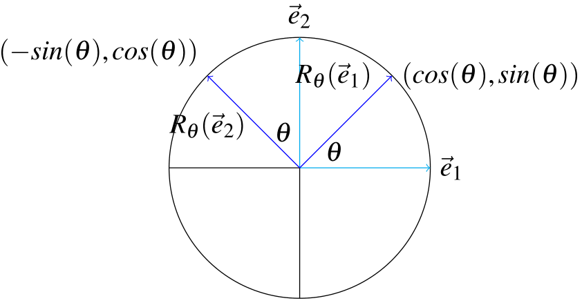
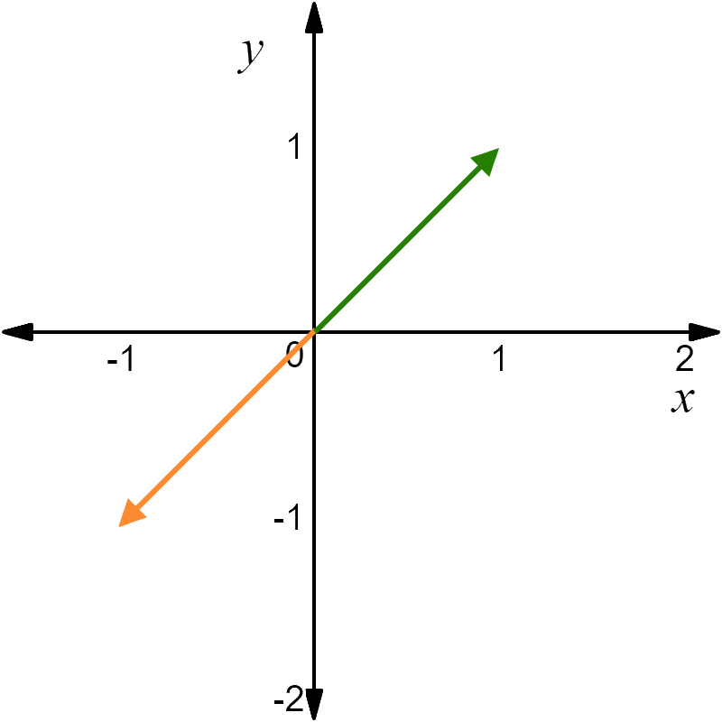

Rotation
Let \(R_\theta:~\mathbb{R}^2 \to \mathbb{R}^2\) be a linear transformation given by\linebreak rotating vectors through an angle of \(\theta\). Then
the matrix \(A\) of \(R_\theta\) is given by
\[\begin{align*}
\begin{bmatrix}\cos( \theta ) & -\sin( \theta )\\\sin( \theta ) & \cos( \theta )\end{bmatrix}.
\end{align*}\]

Proposition:
For any \(\theta\), \[\begin{aligned}
\det\left(\begin{bmatrix}\cos( \theta ) & -\sin( \theta )\\\sin( \theta ) & \cos( \theta )\end{bmatrix}\right)=
\cos^2( \theta )+\sin^2( \theta )=1.\end{aligned}\]
Proof:
(1)\[\begin{align}
\det\left(\begin{bmatrix}\cos( \theta ) & -\sin( \theta )\\\sin( \theta ) & \cos( \theta )\end{bmatrix}\right)=
\cos( \theta )\cos( \theta )+\sin( \theta )\sin( \theta )=
\cos( \theta )^2+\sin( \theta )^2=1.
\end{align}\]
\(\theta\) |
\(0\) |
\(\frac{\pi}{6}\) |
\(\frac{\pi}{4}\) |
\(\frac{\pi}{3}\) |
\(\frac{\pi}{2}\) |
\(\frac{2\pi}{3}\) |
\(\frac{3\pi}{4}\) |
\(\frac{5\pi}{6}\) |
\(\pi\) |
\(\frac{3\pi}{2}\) |
\(2\pi\) |
|---|
\(\sin(\theta)\) |
\(0\) |
\(\frac{1}{2}\) |
\(\frac{\sqrt{2}}{2}\) |
\(\frac{\sqrt{3}}{2}\) |
\(1\) |
\(\frac{\sqrt{3}}{2}\) |
\(\frac{\sqrt{2}}{2}\) |
\(\frac{1}{2}\) |
\(0\) |
\(-1\) |
\(0\) |
\(\cos(\theta)\) |
\(1\) |
\(\frac{\sqrt{3}}{2}\) |
\(\frac{\sqrt{2}}{2}\) |
\(\frac{1}{2}\) |
\(0\) |
\(-\frac{1}{2}\) |
\(-\frac{\sqrt{2}}{2}\) |
\(-\frac{\sqrt{3}}{2}\) |
\(-1\) |
\(0\) |
\(1\) |
Example:
Let \(R_\pi: ~\mathbb{R}^2 \to \mathbb{R}^2\) denote rotation through \(\pi\). Find the matrix of \(R_\pi\). Then, find \(R_\pi\begin{bmatrix}1 \\ 1\end{bmatrix}\).
Solution:
The linear transformation: \(R_\pi(\vec{x}) = A\vec{x}\) for all \(\vec{x}\in \mathbb{R}^2\)
where
(2)\[\begin{align}
A=\begin{bmatrix}\cos(\pi) & -\sin(\pi)\\ \sin(\pi) & \cos(\pi)\end{bmatrix}
=\begin{bmatrix}-1 & 0\\0 &-1\end{bmatrix}.
\end{align}\]
Therefore,
(3)\[\begin{align}
R_\pi\begin{bmatrix}1 \\ 1\end{bmatrix}=
\begin{bmatrix}-1 & 0\\0 &-1\end{bmatrix}\begin{bmatrix}1 \\ 1\end{bmatrix}=\begin{bmatrix}-1 \\ -1\end{bmatrix}
\end{align}\]

The Rotation Matrix of the Sum of Two Angles
Let \(R_{\theta + \phi}\) denote the linear transformation which rotates every vector through an angle of \(\theta + \phi\). Then to obtain \(R_{\theta + \phi}\), we first apply \(R_{\phi}\) and then \(R_{\theta}\) where \(R_{\phi}\) is the linear transformation which rotates
through an angle of \(\phi\) and \(R_{\theta}\) is the linear transformation which rotates through an angle of \(\theta\).
Denoting the corresponding matrices by \(A_{\theta + \phi}\), \(A_{\phi}\), and \(A_{\theta}\), it follows that for every \(\vec{u}\).
(4)\[\begin{align}
R_{\theta + \phi}&=A_{\theta + \phi}\vec{u}=
\begin{bmatrix}\cos( \theta + \phi ) &-\sin( \theta + \phi )\\\sin( \theta + \phi ) &\cos( \theta + \phi )\end{bmatrix}
\vec{u}\\ &=
\begin{bmatrix}
\cos \theta \cos \phi -\sin \theta \sin \phi & -\cos \theta \sin \phi -\sin \theta \cos \phi\\
\sin \theta \cos \phi +\cos \theta \sin \phi & \cos \theta \cos \phi -\sin \theta \sin \phi
\end{bmatrix}
\vec{u}
\end{align}\]
On the other hand,
(5)\[\begin{align}
R_{\theta}R_{\phi}&=A_{\theta}A_{\phi}\vec{u}=
\begin{bmatrix}\cos( \theta) &-\sin( \theta)\\\sin( \theta) &\cos( \theta)\end{bmatrix}
\begin{bmatrix}\cos( \phi ) &-\sin( \phi )\\\sin( \phi ) &\cos( \phi )\end{bmatrix}
\vec{u}\\ &=
\begin{bmatrix}
\cos \theta \cos \phi -\sin \theta \sin \phi & -\cos \theta \sin \phi -\sin \theta \cos \phi\\
\sin \theta \cos \phi +\cos \theta \sin \phi & \cos \theta \cos \phi -\sin \theta \sin \phi
\end{bmatrix}
\vec{u}
\end{align}\]
Hence,
(6)\[\begin{align}
R_{\theta + \phi}&=A_{\theta + \phi}\vec{u}=A_{\theta}A_{\phi}\vec{u}=R_{\theta}R_{\phi}.
\end{align}\]
Example:
Find the matrix of the linear transformation which is obtained by first rotating all vectors through an angle of \(\pi/4\) and then through an angle \(\pi\).
Solution:
We have
(7)\[\begin{align}
A&=A_{\pi/4}A_{\pi}
\underbrace{\begin{bmatrix}\cos(\pi/4) & -\sin(\pi/4)\\ \sin(\pi/4) & \cos(\pi/4)\end{bmatrix} }_{A_{\pi/4}}
\underbrace{\begin{bmatrix}\cos(\pi) & -\sin(\pi)\\ \sin(\pi) & \cos(\pi)\end{bmatrix} }_{A_{\pi}}
\\ &=
\left[\begin{array}{lr} \frac{\sqrt{2}}{2} & -\frac{\sqrt{2}}{2}\\ \frac{\sqrt{2}}{2} & \frac{\sqrt{2}}{2} \end{array}\right]
\left[\begin{array}{lr} -1 & 0 \\ 0 & -1 \end{array}\right]=
\left[\begin{array}{lr} -\frac{\sqrt{2}}{2} & \frac{\sqrt{2}}{2}\\ -\frac{\sqrt{2}}{2} & -\frac{\sqrt{2}}{2} \end{array}\right]
\end{align}\]
Note that here
(8)\[\begin{align}
R_{\pi/4 + \pi}=A_{\pi/4}A_{\pi}\vec{u}=R_{\pi/4}R_{\pi}=
R_{\pi}R_{\pi/4}=A_{\pi}A_{\pi/4}\vec{u}=R_{\pi+\pi/4}.
\end{align}\]
since
(9)\[\begin{align}
A_{\pi}A_{\pi/4}=
\left[\begin{array}{lr} -\frac{\sqrt{2}}{2} & \frac{\sqrt{2}}{2}\\ -\frac{\sqrt{2}}{2} & -\frac{\sqrt{2}}{2} \end{array}\right]
\end{align}\]
Example [Exercise 5.4.5 from the textbook]:
Find the matrix for the linear transformation which rotates every vector in \(R^2\) through an
angle of \(\pi/12\).
Solution:
Note that \(\pi /12 = \pi /3 - \pi /4= (\pi /3)+ (- \pi /4)\). Hence,
We have
(10)\[\begin{align}
A&=
\underbrace{\begin{bmatrix}\cos(\pi/3) & -\sin(\pi/3)\\ \sin(\pi/3) & \cos(\pi/3)\end{bmatrix}}_{A_{\pi /3}}
\underbrace{\begin{bmatrix}\cos(-\pi/4) & -\sin(-\pi/4)\\ \sin(-\pi/4) & \cos(-\pi/4)\end{bmatrix} }_{A_{- \pi /4}}
\\ & =
\left[\begin{array}{cc} \frac{1}{2} & -\frac{\sqrt{3}}{2}\\ \frac{\sqrt{3}}{2} & \frac{1}{2} \end{array}\right]
\left[\begin{array}{cc} \frac{\sqrt{2}}{2} & \frac{\sqrt{2}}{2}\\ -\frac{\sqrt{2}}{2} & \frac{\sqrt{2}}{2} \end{array}\right] =
\left[\begin{array}{cc}
\frac{\sqrt{2}+\sqrt{2}\sqrt{3}}{4} & \frac{\sqrt{2}-\sqrt{2}\sqrt{3}}{4} \\
\frac{\sqrt{2}\sqrt{3}-\sqrt{2}}{4} & \frac{\sqrt{2}\sqrt{3}+\sqrt{2}}{4}
\end{array}\right] \\ &=
\frac{1}{4}
\left[\begin{array}{cc}
\sqrt{2}+\sqrt{2}\sqrt{3} & \sqrt{2}-\sqrt{2}\sqrt{3} \\
\sqrt{2}\sqrt{3}-\sqrt{2} & \sqrt{2}\sqrt{3}+\sqrt{2}
\end{array}\right]
\end{align}\]
Reflection
Let \(Q_m: ~\mathbb{R}^2 \to \mathbb{R}^2\) a linear transformation given by reflecting vectors over the line \(\vec{y} = m\,\vec{x}\) . Then
the matrix of \(Q_m\) is given by
(11)\[\begin{align}
\frac{1}{1+m^2}\begin{bmatrix}1-m^2 & 2m\\2m &m^2-1\end{bmatrix}
\end{align}\]
Proposition:
For any \(m\in \mathbb{R}\) \[\begin{aligned}
\det\left(\frac{1}{1+m^2}\begin{bmatrix}1-m^2 & 2m\\2m &m^2-1\end{bmatrix}\right)
=-\frac{1}{m^4+2\,m^2+1}\left(m^4+2\,m^2+1\right)=-1.\end{aligned}\]
Proof:
For any \(m\in \mathbb{R}\), we have
(12)\[\begin{align}
\det\left(\frac{1}{1+m^2}\begin{bmatrix}1-m^2 & 2m\\2m &m^2-1\end{bmatrix}\right)
&=\left(\frac{1}{1+m^2}\right)^2\,\det\left(\begin{bmatrix}1-m^2 & 2m\\2m &m^2-1\end{bmatrix}\right)
\\ &
=\frac{1}{m^4+2\,m^2+1}\left(-m^4-2\,m^2-1\right)
\\ &
=-\frac{1}{m^4+2\,m^2+1}\left(m^4+2\,m^2+1\right)=-1.
\end{align}\]
Example:
Let \(Q_3: ~\mathbb{R}^2 \to \mathbb{R}^2\) denote reflection over the line \(y = 3x\) . Then \(Q_3\) is a linear transformation. Find
the matrix of \(Q_3\). Then, find \(Q_3\begin{bmatrix}1 \\ 1\end{bmatrix}\).
Solution:
The linear transformation: \(Q_3(\vec{x}) = A\vec{x}\) for all \(\vec{x}\in \mathbb{R}^2\)
where
(13)\[\begin{align}
A=\frac{1}{1+m^2}\begin{bmatrix}1-m^2 & 2m\\2m &m^2-1\end{bmatrix}
=\begin{bmatrix}-\frac{4}{5} & \frac{3}{5}\\ \frac{3}{5} & \frac{4}{5}\end{bmatrix}.
\end{align}\]
Therefore,
(14)\[\begin{align}
Q_3\begin{bmatrix}1 \\ 1\end{bmatrix}=
\begin{bmatrix}-\frac{4}{5} & \frac{3}{5}\\ \frac{3}{5} & \frac{4}{5}\end{bmatrix}\begin{bmatrix}1 \\ 1\end{bmatrix}=\begin{bmatrix}-1/5\\7/5\end{bmatrix}
\end{align}\]

Example:
Find the matrix of the linear transformation which is obtained by first rotating all vectors through an angle of \(\pi/2\) and then reflecting through the \(x\) axis.
Solution:
The matrix of the transformation, \(R_{\pi/2}\), which involves rotating through an angle of \(\pi/2\) is given by
(15)\[\begin{align}
A=\left[\begin{array}{lr}\cos\left(\pi/2\right) & -\sin\left(\pi/2\right) \\
\sin\left(\pi/2\right) & \cos\left(\pi/2\right)\end{array}\right]
=\begin{bmatrix}0 & -1\\1 &0\end{bmatrix}.
\end{align}\]
Reflecting across the \(x\) axis is the same action as reflecting vectors over the line \(y =mx\) with \(m = 0\). The matrix for this transformation (\(Q_0\)):
(16)\[\begin{align}
B=\frac{1}{1+m^2}\begin{bmatrix}1-m^2 & 2m\\2m &m^2-1\end{bmatrix}
=\begin{bmatrix} 1 & 0\\ 0 & -1\end{bmatrix}.
\end{align}\]
Therefore,
(17)\[\begin{align}
\text{The matrix of the linear transformation}=BA=\begin{bmatrix} 1 & 0\\ 0 & -1\end{bmatrix}\begin{bmatrix}0 & -1\\1 &0\end{bmatrix}=
\begin{bmatrix}0 & -1\\-1 &0\end{bmatrix}
\end{align}\]
Note that: \(Q_0\circ R_{\pi/2}=\begin{bmatrix}0 & -1\\-1 &0\end{bmatrix}\) and \(Q_{-1}=\begin{bmatrix}0 & -1\\-1 &0\end{bmatrix}\). Hence, \(Q_0\circ R_{\pi/2}\) is equivalent to a transformation obtained by a reflection in the line \(y=-x\).
Example:
Suppose \(T:~\mathbb{R}^2 \to \mathbb{R}^2\) is a linear transformation
such that $$\begin{aligned}
T\begin{bmatrix}1\ 1\end{bmatrix}=\begin{bmatrix}1\ -1\end{bmatrix}
\text{ and } T
(18)\[\begin{bmatrix}2\\ 1\end{bmatrix}\]
Then \(T\) is a:
a) Reflection in the line \(y=x\).
b) Reflection in the line \(y=-x\).
c) Rotation of \(\pi\) centred at the origin.
d) Reflection in the \(x-\)axis.
e) Rotation of \(-\dfrac{\pi}{2}\) centred at the origin.
Solution:
Let
(19)\[\begin{align}
X=\begin{bmatrix}| & | \\\vec{x}_1 & \vec{x}_2 \\| & | \end{bmatrix}=
\begin{bmatrix}1 & 2\\ 1 & 1\end{bmatrix}
\text{ and }
Y=\begin{bmatrix}| & | \\T (\vec{x}_1) & T (\vec{x}_2) \\| & | \end{bmatrix}=
\begin{bmatrix}1 & 2\\ -1 & -1\end{bmatrix}.
\end{align}\]
It can be seen that \(X^{-1}=\begin{bmatrix}-1 & 2\\ 1 & -1 \end{bmatrix}\). Hence, the matrix of this linear transformation is of the form
(20)\[\begin{align}
A=Y\,X^{-1}=\begin{bmatrix}1 & 2\\ -1 & -1\end{bmatrix}\begin{bmatrix}-1 & 2\\ 1 & -1 \end{bmatrix}=
\begin{bmatrix} 1 & 0\\ 0 & -1 \end{bmatrix}.
\end{align}\]
On the other hand, the transformation obtained by reflecting vectors in the \(x\) axis (\(m=0\)).
(21)\[\begin{align}
\dfrac{1}{1+0^2}\begin{bmatrix}1-0^2 & 2(0)\\2(0) &0^2-1\end{bmatrix}
=\begin{bmatrix} 1 & 0\\ 0 & -1 \end{bmatrix}.
\end{align}\]
Thus, \(T\) is a reflection in the \(x-\)axis.
{kind=link}
{kind=link}